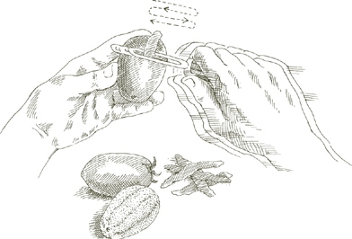

Курс салатов  Буквальное значение итальянского слова «салат» —ун'инсалата— «то, во что добавлена соль», но это слово также пользуется популярностью в метафорическом использовании, пренебрежительно применяемом при описании, например, внутреннего убранства или набора мыслей, которые кажутся довольно запутанными. Тогда есть Л'Инсалата, который конкретно относится к салатному блюду, блюду, играющему четко определенную роль в классической последовательности итальянских блюд. Л'Инсалата подается неизменно после второго блюда, чтобы сигнализировать о приближающемся окончании еды. Он освобождает вкус от хватки измышлений повара, приводя к ощущениям прохлады и свежести, к новому открытию еды в ее наименее обработанном состоянии.
Буквальное значение итальянского слова «салат» —ун'инсалата— «то, во что добавлена соль», но это слово также пользуется популярностью в метафорическом использовании, пренебрежительно применяемом при описании, например, внутреннего убранства или набора мыслей, которые кажутся довольно запутанными. Тогда есть Л'Инсалата, который конкретно относится к салатному блюду, блюду, играющему четко определенную роль в классической последовательности итальянских блюд. Л'Инсалата подается неизменно после второго блюда, чтобы сигнализировать о приближающемся окончании еды. Он освобождает вкус от хватки измышлений повара, приводя к ощущениям прохлады и свежести, к новому открытию еды в ее наименее обработанном состоянии.
Основными, а обычно и единственными компонентами салатного блюда являются овощи и зелень, сырые или отварные, по отдельности или в сочетании. Выбор меняется в зависимости от сезона: сырой Финоккио осенью и зимой нашинкованную савойскую капусту или вареную брокколи; весной вареная спаржа и зеленая фасоль, а затем кабачки или молодой картофель; в разгар лета преобладают сырые ингредиенты: помидоры, перец, огурцы, салаты и разнообразная мелкая зелень. Расширение доступности многих овощей на протяжении большей части года, конечно, стирает некоторые сезонные различия, но мы по-прежнему хотим, чтобы салат говорил нам о сезоне, в котором были созданы его компоненты.
Конечно, существует множество других видов салатов, таких как салаты с рисом и курицей, рисом и моллюсками, тунцом и фасолью или любое количество блюд, содержащих мясное ассорти, рыбу или курицу, смешанную с бобовыми или с сырыми или приготовленными овощами. Такие салаты можно подавать как закуску, как первое блюдо вместо макарон или ризотто, как основное блюдо легкого обеда или как часть фуршета. Фактически, они могут служить чем угодно, кроме как Л'Инсалата, курс салата.
Курс заправки салата Итальянская заправка состоит из оливкового масла первого отжима, соли и винного уксуса.
Множество вариаций одной и той же пословицы дают нам формулу идеально приправленного салата. Одна из версий гласит, что для хорошего салата нужно четыре человека: рассудительный — на соль, расточительный — на оливковое масло, скупой — на уксус, и терпеливый — на его разбрасывание. Оливковое масло является доминирующим ингредиентом, и правильно приготовленный салат не должен стесняться его вкуса. Итальянцы никогда не скажут, наслаждаясь хорошо перемешанным салатом: «Какая замечательная заправка!» Они говорят: «Какое чудесное масло!»
При мытье в сыром виде зелень идет в салат, ее предварительно надо тщательно вытрясти, потому что налипшая на нее вода разжижает заправку. С этой задачей справятся вращатели для салата, или вы можете обернуть зелень большим полотенцем, собрать все четыре угла полотенца в одну руку и несколько раз резко встряхнуть полотенце над раковиной.
Салат подается к столу перед подачей на стол; это никогда не делается заранее. Салат на весь стол должен быть в одной большой миске, в которой должно быть достаточно места, чтобы все овощи могли полностью перемещаться при подбрасывании. Компоненты заправки никогда не смешиваются заранее, их выливают в салат отдельно.
Сначала посыпьте соль и имейте в виду, что рассудительность не означает очень мало соли, она не означает и не слишком много соли. ни слишком мало. Быстро перемешайте салат, чтобы соль распределилась и начала растворяться, затем обильно влейте масло. По наблюдениям я обнаружил, что люди за пределами Италии никогда не используют достаточно масла. Его должно быть столько, чтобы поверхность овощей приобрела блеск. В последнюю очередь добавляйте уксус, всего несколько капель, необходимых для придания аромата, и не более одной небольшой части уксуса на три части масла с горкой. Достаточно немного уксуса, чтобы его заметили, слишком много уксуса монополизирует все ваше внимание на недостатках любого другого ингредиента. Также имейте в виду, что кислота уксуса, как и кислота лимона, «готовит» салат, поэтому в первую очередь заливают масло, чтобы защитить зелень. Как только добавите уксус, начните перемешивать. Чем тщательнее перемешан салат и чем равномернее соль, масло и уксус распределены по каждому листу и каждому овощу, тем вкуснее он будет. Аккуратно перемешайте, осторожно переворачивая зелень, чтобы она не помялась и не почернела.
Другие приправы Свежевыжатый лимонный сок может иногда служить приятной заменой уксуса. Он превосходно сочетается с приготовленными салатами, такими как вареный мангольд, который затем описывается как аллагро, в терпком стиле. Лимон также приветствуется на очень мелко нашинкованной моркови, а летом на помидорах и огурцах.
Чеснок может быть интересным, если обращаться к нему время от времени, импульсивно, но регулярно он утомляет. Его присутствие должно быть закулисным, как в Салат из тертой савойской капусты, или в помидорах в этот рецепт.
Перец встречается нечасто. Вероятно, изначально эта специя была слишком дорогой, чтобы стать частью такого скромного повседневного блюда, как салат. Но если он вам нравится, то в итальянских салатах ему наверняка найдется место, если это черный перец, ведь он имеет более полный аромат, чем белый.
Бальзамический уксус, каким бы незнакомым он ни был до недавнего времени другим итальянцам, веками использовался в Модене, чтобы улучшить вкус основной заправки для салата. Но модезийцы никогда не употребляли его каждый день, и я бы тоже. Его сладость и густой аромат — качества, которые время от времени можно использовать, чтобы поразить вкусовые рецепторы, но если использовать их слишком часто, они становятся приторными. При заправке салата бальзамический уксус используют для обогащения обычного винного уксуса, а не для его замены.
Или базилик или петрушка пойдет на пользу большинству салатов. Использование мяты, как и у майоран и орегано, как показывают рецепты в этой главе, более ограничены.
Нарезанный лук обостряет вкус большинства сырых салатов, особенно салатов с помидорами. Чтобы притупить острый укус, лук необходимо подвергнуть следующей процедуре, начиная за 30 и более минут до приготовления остальных ингредиентов салата:
• Очистите лук, нарежьте его очень тонкими кольцами, положите в миску и обильно залейте холодной водой.
• Сожмите кольца в руке на 2 или 3 секунды, плотно сжимая руку и отпуская ее семь или восемь раз. Кислота, которую вы выдавите из лука, сделает воду слегка молочной.
• Достаньте луковые кольца с помощью дуршлага или сита, вылейте воду из миски, налейте свежую воду. Положите лук обратно в миску и повторите описанную выше процедуру еще 2 или 3 раза.
• Отжав лук в последний раз, снова смените воду и положите лук замачиваться. Сливайте воду и заменяйте ее каждые 10 минут, пока не будете готовы приготовить салат.
• Прежде чем положить лук в салатницу, плотно соберите его в полотенце и отожмите всю влагу, которую сможете.

На 8 порций
½ средней луковицы, желательно сладкого сорта, например, бермудской красной, Видалии или Мауи, нарезанной и замоченной. как описано, ИЛИ 3 или 4 лука-шалота
2 небольшие морковки
1 приседание, раунд Финоккио
½ желтого или красного сладкого перца
1 сердце сельдерея
½ головки кудрявого цикория, бостонского салата или эскарола, ИЛИ 1 целый кочан салата Бибб
½ небольшого пучка маше или полевой салат
½ небольшого пучка руккола
1 средний артишок ½ лимона
2 свежих, спелых, твердых, средних круглых помидора
Соль
Оливковое масло экстра вирджин
Красный винный уксус отборного качества.
Примечание Салат-микс в итальянском стиле должен обеспечивать максимальное разнообразие текстур и вкусов, которое может предложить рынок, а ингредиенты, предложенные выше, основаны на круглогодичной доступности многих овощей. Этот выбор следует воспринимать как тщательно продуманную рекомендацию, но он не является железным, и вы можете работать в соответствии с его рекомендациями, чтобы сделать замены, которые соответствуют вашему вкусу и адаптированы к возможностям вашего рынка и сезона.
В таком микс-салате вы также можете использовать савойскую, красную или зеленую капусту, очень мелко нашинкованную; радиккио; ромэн или любой другой сорт салата, кроме айсберга, который не очень по-итальянски на вкус; небольшой красный или белый редис, нарезанный тонкими дисками; огурец вместо моркови, но не оба вместе; очень молодые кабачки, замоченные, очищенные и обрезанные как описано, нарезаем тонкими спичками и кладем в салат в сыром виде.
1. Подготовьте лук, как рекомендовано, или, если вы используете зеленый лук, снимите тонкий ломтик у основания, обрезав корни, а еще один срежьте с верхушки, снимите и выбросьте все поврежденные или обесцвеченные листья, затем нарежьте весь зеленый лук тонкими кружочками и кольцами. Замочите его на несколько минут в холодной воде, затем слейте воду и встряхните полотенцем. Положите готовый лук или зеленый лук в большую сервировочную миску.
2. Вымойте морковь, снимите тонкие ломтики сверху и снизу, очистите ее, затем натрите на терке или в кухонном комбайне с самыми крупными отверстиями или нарежьте максимально тонкими кружочками. Добавьте их в миску.
3. Разрежьте Финоккио верхушки там, где они встречаются с луковицей, и выбросьте их. Отсоедините и выбросьте все внешние части лампочки, которые могут быть повреждены или обесцвечены. Отрежьте примерно ⅛ дюйма от торца. Луковицу разрежьте горизонтально, по ширине, на очень тонкие кольца. Замочите кольца в 2–3 сменах холодной воды, затем высушите их полотенцем или вращателем для салата. Добавлять Финоккио в миску.
4. Соскребите и выбросьте внутреннюю мякоть перца и все семена. Снимите с него сырую кожуру с помощью овощечистки с поворотным лезвием, затем разрежьте вдоль на очень тонкие полоски и добавьте их в миску.
5. Срежьте с сердцевины сельдерея верхушки, снимите тонкий ломтик с его основания, нарежьте сердцевину поперек на узкие кольца шириной около ¼ дюйма и бросьте их в миску.
6. Если вы используете вьющийся цикорий, бостонский салат или эскарол, выбросьте все внешние темно-зеленые листья. Отделите оставшиеся листья от кочана и порвите их вручную на небольшие кусочки. Замочите их в одной или двух сменах холодной воды на 15–20 минут, пока в воде не исчезнут следы почвы. Слейте воду и высушите при отжиме или встряхните полотенцем. Если вы используете салат Бибб, приготовьте его, как описано выше, но будьте осторожны при обращении с ним, потому что он легко повреждается и меняет цвет. Добавьте в миску.
7. Оторвите стебли маше или полевой салат и руккола, разорвите большие листья на две или более частей, замочите, осушите и высушите их, как вы это делали с салатом. Положите их в миску.
8. Отделите и выбросьте стебель артишока, обрежьте все твердые части. как описано, снимая с листьев немного больше, чем если бы вы их готовили. Разрежьте артишок пополам, чтобы обнажить сердцевину и колючие внутренние листья, которые вы соскоблите и выбросите. Нарежьте артишок вдоль как можно более тонкими ломтиками. Выжмите несколько капель сока из половинки лимона на все разрезанные части, чтобы они не обесцвечились, и добавьте к другим ингредиентам в миске.
9. С сырых помидоров очистите кожуру с помощью овощечистки с поворотными лезвиями, нарежьте их дольками, удалите часть семян и положите помидоры в салатницу.
10. Обильно посыпьте солью, если разумно, перемешайте один раз, налейте достаточно оливкового масла, чтобы покрыть все овощи, добавьте немного уксуса и перемешайте несколько раз и тщательно, но не грубо. Подавайте сразу.

WКУРИЦА I ОТДАЛ серия занятий в Бриджхемптоне, Лонг-Айленд, однажды летом я разработал учебную программу по соусам для пасты, ризоттои рыбные блюда, которые, как я надеялся, мои ученики найдут интересными и подходящими для необыкновенных продуктов с ферм и водоемов Лонг-Айленда. Однажды я, подумав, включила в меню этот томатный салат, приготовленный так, как его готовил мой отец, когда я была маленькой девочкой. Реакция на пасту и рыбу была настолько восторженной, насколько я мог пожелать, но все внимание затмил салат. Когда весь томатный салат закончился, студенты подрались за сервировочное блюдо, чтобы впитать сок хлебом. Кажется, трудно когда-либо приготовить достаточно этого томатного салата, поэтому вы тоже можете счесть целесообразным, когда подаете его, подать его на стол в большом количестве в сопровождении ломтиков хорошего хрустящего хлеба.
На 4-6 порций
4-5 зубчиков чеснока
Соль
Красный винный уксус отборного качества.
2 фунта свежих, спелых, твердых, круглых или сливовых помидоров
1 дюжина свежих листьев базилика
Оливковое масло экстра вирджин
1. Очистите зубчики чеснока и хорошенько разомните их рукояткой ножа. Положите их в небольшую миску или блюдце вместе с 1–2 чайными ложками соли и 2 столовыми ложками уксуса. Перемешайте и дайте настояться минимум 20 минут.
2. Сырые помидоры очистите от кожицы с помощью овощечистки с поворотным лезвием, нарежьте их тонкими ломтиками и разложите ломтики на глубоком сервировочном блюде.

3. Перед подачей салата промойте листья базилика в холодной воде, стряхните с них влагу, разорвите их вручную на 2–3 части и посыпьте ими помидоры.
4. Вылейте уксус, пропитанный чесноком, через сито, распределив его по помидорам. Добавьте достаточно оливкового масла, чтобы оно хорошо покрыло помидоры, перемешайте, попробуйте и при необходимости исправьте соль и уксус и сразу подавайте.
SНАШРЕВАННАЯ МОРКОВЬ Салат с лимонным соком — один из самых освежающих салатов, и его, возможно, проще всего приготовить.
На 4 порции
5–6 средних морковей, вымытых, порезанных, очищенных и нарезанных, как описано в рецепте. Отличный смешанный сырой салат
Соль
Оливковое масло экстра вирджин
1 столовая ложка свежевыжатого лимонного сока
Смешайте все ингредиенты, используя достаточно оливкового масла, чтобы оно хорошо покрыло морковь. Тщательно перемешайте, попробуйте и поправьте на соль и лимонный сок и сразу подавайте.
К ингредиентам предыдущего рецепта добавьте ½ фунта свежего рукколаи замените лимонный сок красным винным уксусом. Обрежьте, замочите, осушите и высушите руккола как описано в рецепте Отличный смешанный сырой салат Смешайте все ингредиенты способом, описанным выше.
На 4 порции, если Финоккио большой
1 приседание, круглый Финоккио
Соль
Оливковое масло экстра вирджин
Черный перец, свежемолотый с мельницы
Примечание При приготовлении сырых продуктов не используется уксус или лимонный сок. Финоккио когда его подают отдельно.
1. Обрежьте Финоккио, нарежьте его очень тонкими ломтиками, замочите и высушите, как описано в рецепте. Отличный смешанный сырой салат.
2. Перемешайте в сервировочной миске соль, достаточное количество оливкового масла, чтобы оно хорошо покрылось, и щедро помолотый черный перец.

На 4 порции
1. Замочите солнечные орехи на 15 минут в холодной воде, затем тщательно промойте их под проточной водой грубой тканью или щеткой. Нарежьте их тонкими, как бумага, ломтиками и положите в сервировочную миску.

2. Шпинат будет гораздо приятнее есть, если вы освободите самую нежную часть каждого листа от стебля и его жевательных ребер. Одной рукой сложите лист вдоль, загнув его внутрь к верхней стороне, а другой рукой снимите стебель вместе с тонким ребром, выступающим с нижней стороны листа. Замочите нарезанный шпинат в тазу с достаточным количеством холодной воды, чтобы она полностью покрыла его. Сливайте и доливайте пресную воду так часто, как это необходимо, пока не исчезнут следы почвы. Высушите листья или встряхните их, чтобы удалить всю возможную влагу, разорвите их на две или три более мелкие части и добавьте в миску.
3. Тщательно перемешайте соль, перец, достаточно масла, чтобы оно хорошо покрылось, и немного уксуса. Подавайте немедленно.
Ты НАЙДЕТЕ вот еще один пример того, как в итальянских салатах используется только запах чеснока. Также см. этот томатный салат.
На 6 и более порций
1 савойская капуста, около 2 фунтов
Кусочек хрустящего хлеба
2 зубчика чеснока
Соль
Черный перец, свежемолотый с мельницы
Оливковое масло экстра вирджин
Красный винный уксус отборного качества.
1. Оторвите зеленые внешние листья капусты и либо выбросьте, либо сохраните для овощного супа. Мелко нарежьте все белые листья и положите их в сервировочную миску.
2. Срежьте с хлеба мягкую мякиш и от корочки отрежьте два куска длиной около 1 дюйма.
3. Слегка разомните зубчики чеснока рукояткой ножа, раскалывая кожицу и снимая ее. Энергично натрите чесноком оба куска хлебной корочки, положите корки в миску и выбросьте чеснок. Тщательно перемешайте и дайте постоять от 45 минут до 1 часа.
4. Когда все будет готово к подаче, положите в миску соль, перец, достаточное количество оливкового масла, чтобы оно хорошо покрылось, и немного уксуса. Несколько раз перемешайте капусту, пока она не будет равномерно покрыта заправкой. Выньте и выбросьте хлебные корки. Попробуйте и добавьте приправы и сразу подавайте.

На 6-8 порций
1 головка салата ромэн
5 столовых ложек оливкового масла первого отжима
1 столовая ложка красного винного уксуса
Соль
Черный перец, свежемолотый с мельницы
¼ фунта импортного горгонзола сыр, доведенный до комнатной температуры за 3–4 часа до использования
½ стакана очищенных грецких орехов, нарезанных очень крупно
1. Оторвите и выбросьте все поврежденные внешние листья ромэна. Остальное отделите от сердцевины и порвите вручную на небольшие кусочки. Замочите в нескольких сменах холодной воды, затем высушите отжимом или встряхните полотенцем.
2. В сервировочную миску положите оливковое масло, уксус, щепотку соли и несколько молотых перцев. Взбейте их вилкой, пока приправы не смешаются равномерно.
3. Добавьте половину горгонзола и тщательно разомните его вилкой. Добавьте половину измельченных грецких орехов, весь салат и тщательно перемешайте, чтобы заправка распределилась равномерно. Попробуйте и исправьте приправу.
4. Выложите сверху оставшееся горгонзола, разложив его над салатом и оставшимися измельченными грецкими орехами. Подавайте сразу.
На 6 порций
1 огурец
3 апельсина
6 небольших красных редисок
Свежие листья мяты
Соль
Оливковое масло экстра вирджин
Свежевыжатый сок ½ лимона
1. Если огурец покрыт воском или у него толстая кожица, очистите его. Если нет, промойте его под холодной проточной водой. Нарежьте огурец очень тонкими пластинками и выложите на сервировочное блюдо.
2. Очистите апельсины, удалив также всю белую сердцевину под кожурой. Нарежьте апельсины тонкими кружочками, удалите семена и добавьте ломтики на блюдо.
3. Срежьте и выбросьте с редиса листовую верхушку, промойте редис в холодной воде, не очищая от кожуры, нарежьте тонкими дисками и добавьте в блюдо.
4. Вымойте полдюжины маленьких листьев мяты, разорвите их на 2–3 части каждый и посыпьте ими ломтики апельсина, редиса и огурца.
5. Добавьте соль, оливковое масло и лимонный сок, тщательно перемешайте и сразу подавайте.

TОН СЛОВО пинцимонио — это сокращение, шутливое по происхождению, но давно вошедшее в респектабельное употребление, слова пинзаре, щипать и супружество, супружество. В нем описывается обычай держать сырой овощ между большим и указательным пальцами — «защипывать» его — и «смазывать» его оливковым маслом, солью и перцем.
В ресторанах пинцимонио иногда его подают к столу, когда человек садится, еще до того, как он взглянет на меню, но наиболее уместным и освежающим его употреблением является после мясного или рыбного блюда сытной и изысканной еды.
Обычный ассортимент сырых овощей для пинцимонио включает все или большую часть следующего: морковь, сладкий перец, Финоккио, артишоки, сельдерей, огурцы, редис и зеленый лук. Вот как их приготовить:
1. Вымойте и очистите морковь. Если они маленькие и у них свежие листовые верхушки, оставьте верхушки, чтобы они держались. Если у вас морковь покрупнее, снимите верхний ломтик и разрежьте морковь вдоль на две части.
2. Разрежьте перец на две части, чтобы обнажить и удалить мясистую сердцевину со всеми семенами. Разрежьте перец вдоль на полоски шириной около 1,5 дюйма.
3. Обрежьте верхушки листьев. Финоккио, снимите тонкий срез с торца, выбросьте все поврежденные внешние листья, отрежьте Финоккио вдоль на 4 клинья и промойте их в нескольких сменах холодной воды.
4. Отделите и выбросьте стебли артишоков. Обрезаем все жесткие части как описано. Разрежьте артишок вдоль на 4 дольки, удалите сердцевину и колючие, вьющиеся внутренние листья и выдавите несколько капель лимонного сока на все разрезанные части, чтобы они не изменили цвет.
5. Разделите сельдерей на стебли, оставив сердцевину целой, но разделив ее вдоль на две части. Отрежьте тонкий ломтик вокруг торца сердца. Листовые верхушки оставьте на сердцевине, а все остальные выбросьте. Промойте в нескольких сменах холодной воды.
6. Вымойте огурцы и разрежьте их вдоль на две или на 4 части, если они очень толстые.
7. Вымойте редис и больше ничего с ним не делайте, оставив верхушки листьев как для красоты, так и для хранения.
8. Выберите зеленый лук с толстыми круглыми луковицами, оборвите и выбросьте внешние листья, отрежьте корни и примерно на ½ дюйма верхушки. Промойте в холодной воде.
9. Сложите все овощи в миску или кувшин так, чтобы они плотно прилегали.
Для каждого гостя должно быть приготовлено блюдце с оливковым маслом, солью и большим количеством молотого черного перца. Гости берут из миски овощи по своему выбору и окунают их в блюдце, получая таким образом пинцимонио.
По всей Центральной Италии, от Флоренции до Рима, самый вкусный салат основан на старом рецепте изобретательных бедняков — хлебе и воде. Черствый хлеб смачивают, но не обливают холодной водой, добавляют остальные ингредиенты салата, которые вы найдете ниже, и все заправляют оливковым маслом и уксусом. Хлеб, пропитанный приправами и соками салата, растворяется до зернистой консистенции, как рыхлый, грубый. полента. Если у вас правильный хлеб — не белый из супермаркета, а смелый деревенский хлеб, такой как тосканский или Абруцци, — невозможно внести в традиционную версию никаких изменений, которые улучшили бы ее. Если у вас есть источник такого хлеба или если вы приготовили Хлеб с оливковым маслом и если есть остатки, приготовьте из них салат, как я только что описал. Если вам приходится полагаться на стандартный коммерческий хлеб, альтернативное решение, предложенное в следующем рецепте, даст очень приятные результаты.
На 4-6 порций
½ зубчика чеснока, очищенного
2–3 плоских филе анчоусов (желательно приготовленных дома) как описано), мелко нарезанный
1 столовая ложка каперсов, замоченных и промытых как описано если упаковано в соли, слить, если в уксусе
¼ желтого сладкого перца
Соль
¼ стакана оливкового масла первого отжима
1 столовая ложка красного винного уксуса отборного качества
2 чашки твердого, хорошего хлеба, очищенного от корки, поджаренного в жаровне и нарезанного квадратами размером ½ дюйма (крошки оставить)
3 свежих, спелых, твердых, круглых помидора
1 чашка огурца, очищенного и нарезанного кубиками по ¼ дюйма.
½ средней луковицы, желательно сладкого сорта, например, бермудской красной, Видалии или Мауи, нарезанной и замоченной. как описано
Черный перец, свежемолотый с мельницы
1. Разомните чеснок, анчоусы и каперсы до состояния пюре, прижимая тыльную сторону ложки к стенке миски, ступку с пестиком или кухонный комбайн.
2. Соскребите со сладкого перца часть мясистой сердцевины вместе с семенами и нарежьте перец кусочками толщиной ¼ дюйма. Положите перец, смесь чеснока и анчоусов в сервировочную миску, добавьте соль, оливковое масло и уксус и тщательно перемешайте.
3. Сложите квадраты хлеба вместе с крошками от обрезков в небольшую миску. Пюрируйте 1 помидор через пищевую мельницу поверх хлеба. Перемешайте и дайте настояться вместе с небольшим количеством соли в течение 15 минут или больше.
4. С двух других помидоров снимите кожицу с помощью овощечистки с поворотным лезвием и нарежьте их на кусочки толщиной ½ дюйма, выделив семена, если их слишком много. Добавьте в сервировочную миску замоченные квадратики хлеба и нарезанный помидор вместе с нарезанным кубиками огурцом, замоченными и осушенными ломтиками лука и несколькими щепотками черного перца. Тщательно перемешайте, попробуйте, добавьте приправы и подавайте.
ALL ИНГРЕДИЕНТЫ части этого салата, за исключением фасоли, нужно нарезать так мелко, чтобы они стали кремообразными, смешались друг с другом и прилипли к фасоли с консистенцией соуса. Это можно сделать вручную, но если есть кухонный комбайн, лучше всего использовать его.
Компоненты салата приобретут лучший вкус, если их перемешать, пока фасоль еще достаточно теплая. Если вы можете это организовать, постарайтесь рассчитать время приготовления фасоли так, чтобы она была готова, когда вы собираетесь готовить салат.
На 6 порций
2 столовые ложки нарезанного лука
3 свежих листа шалфея
2–3 плоских филе анчоусов (желательно приготовленных дома). как описано)
⅓ стакана оливкового масла первого отжима
1 столовая ложка красного винного уксуса
Желтки 2 сваренных вкрутую яиц
1 столовая ложка измельченной петрушки
Соль
1 чашка сушеного каннеллини белая фасоль, замоченная и приготовленная как указанои слит (см. примечание)
Черный перец, свежемолотый с мельницы
Примечание Если вы готовите фасоль заранее, держите ее в жидком состоянии и осторожно подогрейте перед использованием.
1. Поместите все ингредиенты, кроме фасоли и черного перца, в кухонный комбайн и измельчите до кремообразной консистенции.
2. Перемешайте осушенную фасоль, желательно еще теплую, с обработанными ингредиентами. Добавьте черный перец, еще раз перемешайте, попробуйте и поправьте на соль и другие приправы. Дайте настояться при комнатной температуре в течение 1 часа, затем еще раз перемешайте непосредственно перед подачей на стол. Не охлаждайте.
TИДЕАЛЬНЫЕ КОМПОНЕНТЫ этого салата длинные Тревизо радиккио (видеть Радиккьо) и свежую фасоль клюквы (описана здесь), но есть удовлетворительные заменители того или другого. Вместо Тревизо радиккио вы можете использовать более распространенный круглый или даже бельгийский эндивий, принадлежащий к тому же семейству. Вместо свежей фасоли можно использовать сушеную, а если не удалось найти ни свежую, ни сушеную фасоль клюквы, можно перейти к сушеной. каннеллини бобы.
На 4-6 порций
Клюквенная фасоль, 2 фунта свежая, ИЛИ 1 чашка сушеного, замоченного и приготовленного как описано
1 фунт радиккио, либо сорт Тревизо с длинными листьями, либо с круглой головкой. ИЛИ Бельгийский эндивий
Соль
Оливковое масло экстра вирджин
Красный винный уксус отборного качества.
Черный перец, свежемолотый с мельницы
1. Если вы используете свежую фасоль: Очистите их, положите в кастрюлю с достаточным количеством холодной несоленой воды, чтобы она покрыла ее примерно на 2 дюйма, доведите воду до слабого кипения, накройте кастрюлю и варите на медленной, постоянной скорости до готовности, примерно от 45 минут до 1 часа. Рассчитайте время приготовления так, чтобы при сборке салата они были еще теплыми.
Если вы используете сушеные бобы: Время их приготовления, следуя направления, чтобы они были еще теплыми, когда вы будете собирать салат.
2. Если вы используете радиккио: Отделите листья от кочана, выбросив все поврежденные, нарежьте их узкими полосками шириной около ¼ дюйма, замочите на несколько минут в холодной воде, слейте воду и либо высушите, либо встряхните полотенцем.
Если используете эндивий: Выбросьте все поврежденные листья, отрежьте тонкий срез от корня. конец, затем разрежьте его поперек на полоски шириной ¼ дюйма, промойте и высушите, как описано выше.
3. Слейте воду с фасоли и положите ее, пока она еще теплая, в сервировочную миску с радиккио или эндивий. Добавьте соль, перемешайте один раз, влейте достаточно масла, чтобы оно хорошо покрылось, добавьте немного уксуса, щепотку черного перца, тщательно перемешайте и сразу подавайте.
WКУРИЦА СПАРЖА Сейчас на пике сезона, самый популярный способ подачи его в Италии — это салат в вареном виде. Его подают, пока он еще теплый или не ниже комнатной температуры. В заправку уходит немного больше уксуса, чем обычно. Чтобы сохранить спаржу свежей, см. предположение.
На 4-6 порций
2 фунта свежей спаржи, очищенной и приготовленной как описано
Соль
Черный перец, свежемолотый с мельницы
Оливковое масло экстра вирджин
Красный винный уксус отборного качества.
1. Готовьте спаржу до тех пор, пока она не станет мягкой, но все еще твердой, слейте воду и выложите ее на длинное блюдо, оставив один конец блюда свободным. Подпереть противоположный конец, чтобы жидкость, выделяемая спаржей, стекала к свободному концу блюда. Через 15–20 минут вылейте скопившуюся жидкость и переложите спаржу, равномерно распределив ее.
2. Добавьте соль и перец, обильно смажьте маслом и обильно сбрызните уксусом. Наклоните блюдо в нескольких направлениях, чтобы приправы распределились равномерно, и сразу подавайте.
На 4 порции
1 фунт зеленой фасоли, вареной как описано
Соль
Оливковое масло экстра вирджин
Красный винный уксус отборного качества. ИЛИ свежевыжатый лимонный сок
Слейте воду с фасоли, когда она станет слегка твердой, но нежной, а не хрустящей. Положите их в сервировочную миску, добавьте соль и один раз перемешайте. Налейте на них достаточно масла, чтобы они стали блестящими. Добавьте немного уксуса или лимонного сока по вашему желанию. Тщательно перемешайте, попробуйте, добавьте приправы и подавайте, пока они еще теплые.
TОН ОЧЕНЬ ЛУЧШИЙ ПУТЬ приготовить свеклу – значит запечь ее. Он концентрирует их вкус до интенсивной, наполняющей рот сладости, от которой можно упасть в обморок, если вы никогда раньше их не пробовали. Никакой другой метод не сравнится с запеканием в духовке — ни варкой, ни приготовлением в микроволновой печи, ни тем более покупкой в банках. Это требует времени, но не требует просмотра и дает вам свободу делать все, что вам нравится. Нарезанная печеная свекла, заправленная оливковым маслом, солью и уксусом, — один из самых вкусных салатов, которые вы можете приготовить.

Одним из бонусов покупки сырой свеклы является получение ботвы. И стебли, и листья превосходно отвариваются и подаются в виде салата. Ищите верхушки с самыми маленькими листьями — признак молодости и нежности. Тонкие красные стебли, разбросанные среди пышных зеленых листьев, восхитительны на вид, и восхитителен контраст между хрусткостью первого и нежностью второго.
На 4 порции
1 пучок сырой красной свеклы вместе с верхушками, примерно 4–6 свекл, в зависимости от размера
Соль
Оливковое масло экстра вирджин
Красный винный уксус отборного качества.
1. Разогрейте духовку до 400°.
2. Отрежьте у свеклы верхушки у основания стеблей и сохраните до готовности, как описано в следующем рецепте. Обрежьте корневые концы луковиц свеклы.
3. Вымойте свеклу в холодной воде, затем заверните ее все вместе в пергаментную бумагу или алюминиевую фольгу, плотно защипнув края бумаги или фольги. Поставьте их в верхнюю часть духовки. Они готовы, когда становятся нежными, но твердыми при протыкании вилкой, примерно через 1,5–2 часа, в зависимости от их размера.
4. Пока они еще теплые, но достаточно прохладные, снимите с них черноватую кожицу. Нарежьте их тонкими ломтиками.
5. Когда будете готовы подавать, добавьте соль, большое количество оливкового масла и немного уксуса.
Предварительное примечание Запеченная свекла вкуснее всего в тот день, когда она готова, подается еще слегка теплой из духовки. Но они очень хороши, даже если их нужно хранить день или два. Охладите их целиком, с кожицей, в плотно закрывающемся полиэтиленовом пакете. Перед подачей достаньте из холодильника заблаговременно, чтобы они достигли комнатной температуры.
TОН СВЕЖЕСТЬ стеблей и листьев очень недолговечны, поэтому их следует готовить и есть, если это возможно, в день покупки. Из вареной ботвы можно приготовить красивый салат-микс, смешав его с нарезанной печеной свеклой. Или вы можете убрать менее скоропортящиеся сырые луковицы свеклы на два-три дня и использовать в салате только верхушки, пока они еще свежие.
На 4 порции
Стебли и листья от 3 и более гроздей сырой свеклы.
Соль
Оливковое масло экстра вирджин
Свежевыжатый лимонный сок
Примечание Если вы подаете ботву и нарезанную свеклу вместе, замените лимонный сок уксусом.
1. Оторвите листья от стеблей. Разрежьте стебли на 2 или 3 части, при этом отдергивая все веревочки. Промойте стебли и листья в холодной воде.
2. Доведите до кипения 3–4 литра воды, добавьте соль и, как только она снова закипит, положите туда только стебли. Примерно через 8 минут (немного дольше, если стебли довольно толстые) положите листья. Они готовы, когда укус станет мягким, примерно за 5 минут или меньше. Хорошо слейте воду, стряхивая всю влагу.
3. Когда они остынут, но еще будут слегка теплыми, перемешайте их с солью, оливковым маслом и небольшим количеством лимонного сока. Подавайте сразу.
На 6 и более порций
1 головка цветной капусты, около 2 фунтов, приготовленная как описано
Соль
Оливковое масло экстра вирджин
Красный винный уксус отборного качества.
Примечание Если вы не можете использовать всю головку в качестве салата, приправьте ровно столько, сколько вам нужно, а остальное сохраните. Его можно хранить в холодильнике и через день или два использовать для приготовления запеченной цветной капусты с маслом и сыром пармезан, запеченной цветной капусты с соусом бешамель, жареных ломтиков цветной капусты с тестом из яиц и панировочных сухарей или жареной цветной капусты с тестом из сыра пармезан.
1. Слейте воду с цветной капусты, когда она станет мягкой, но еще слегка твердой, и, прежде чем она остынет, отделите соцветия от головки, разделив все, кроме самых маленьких, на две или три части.
2. Положите соцветия в сервировочную миску и обильно приправьте солью, оливковым маслом и уксусом. Цветной капусте необходимо достаточное количество всех трех продуктов. Аккуратно перемешайте, чтобы не раздавить соцветия, попробуйте и поправьте приправу, и сразу подавайте.
IН ПРИНИМАЮ Многие итальянцы согласятся, что одним из критериев хорошего домашнего повара должно быть качество картофельного салата. Не то чтобы в этом есть какая-то загадка: это всего лишь картофель, соль, оливковое масло и уксус. Никакого лука, яиц, майонеза, зелени и прочих вкусностей. Но выбор картофеля должен быть правильным. Мякоть их должна быть восково-гладкой и плотной, не рассыпчатой; их цвет в приготовленном виде теплый и золотистый, как у кукурузы или деревенского масла; их вкус свежий, сладкий и ореховый, без намека на затхлость. Их следует варить до полной готовности, но без малейшего намека на сырость. Кусочки должны отрываться от картофеля целыми, не распадаясь. Их необходимо сбрызнуть хорошим винным уксусом, пока они еще горячие, чтобы они могли впитать аромат, пока тепло смягчает уксусный оттенок уксуса.
На 4-6 порций
1,5 фунта воскового, вареного картофеля, нового или зрелого, одинакового размера.
Красный винный уксус отборного качества.
Соль
Оливковое масло экстра вирджин
1. Вымойте картофель в холодной воде. Положите их в кастрюлю с кожурой и залейте достаточным количеством воды, чтобы покрыть ее как минимум на 2 дюйма. Доведите до медленного кипения и варите до готовности, но не слишком мягкой. Это должно занять около 35 минут или меньше, если вы используете небольшой молодой картофель. Не протыкайте их вилкой слишком часто, иначе они станут сырыми или сломаются позже при нарезании.
2. Когда все будет готово, вылейте воду из кастрюли, но оставьте картофель. Встряхивайте кастрюлю на среднем огне всего несколько минут, перемещая картофель, заставляя его избыток влаги испаряться.
3. Снимите кожуру с картофеля, пока он еще горячий.
4. Используя острый нож и слегка надавливая, нарежьте картофель ломтиками толщиной около ¼ дюйма и разложите их на теплом сервировочном блюде. Сразу же посыпьте примерно 3 столовыми ложками уксуса. Аккуратно переверните картофель.
5. Когда будете готовы к подаче, добавьте соль и большое количество очень хорошего оливкового масла. Попробуйте и исправьте приправы, при необходимости добавьте еще уксуса. Подавайте, пока он еще теплый или не ниже комнатной температуры. Не оставляйте на ночь и не храните в холодильнике.
YУНГ SВИСС ЧАРД имеет тонкие стебли, которые необходимо выбросить, но у зрелого мангольда широкие мясистые стебли, которые очень вкусны. В описываемом здесь салате используются как листья, так и стебли. Однако если вы предпочитаете использовать стебли отдельно, например, в это запеченное блюдо, отложите их в сторону и сделайте салат исключительно из листьев.
На 4-6 порций
2 пучка мангольда
Соль
Оливковое масло экстра вирджин
Свежевыжатый лимонный сок
1. Если мангольд молодой, с тонкими стеблями, отделите и выбросьте стебли. Если это зрелый мангольд с широкими стеблями, снимите листья со стеблей, выбросив все поврежденные листья. Разрежьте стебли вдоль на узкие полоски шириной чуть менее ½ дюйма, а затем разрежьте их на более короткие кусочки длиной около 4 дюймов. Замочите весь мангольд в тазу, несколько раз меняя холодную воду, пока в воде не останется следов почвы.
2. Если использовать только листья мангольда: Положите листья в кастрюлю так, чтобы на них осталась только влага, добавьте 2 чайные ложки соли, включите средний огонь, накройте крышкой и варите до полной готовности, примерно 15–18 минут с момента, когда жидкость в кастрюле начнет пузыриться.
Если используются и стебли, и листья: Положите обрезанные стебли в кастрюлю с 2-мя 3 дюйма воды, включите средний огонь, накройте крышкой и варите 2–3 минуты после того, как вода закипит. Затем добавьте листья, 2 чайные ложки соли и варите до готовности.
3. Откиньте мангольд на дуршлаг и осторожно отожмите из него как можно больше влаги тыльной стороной вилки. Перекладываем на сервировочное блюдо. Когда он станет чуть теплым или не холоднее комнатной температуры, перемешайте его с солью, оливковым маслом и 1 или несколькими столовыми ложками лимонного сока. Подавайте сразу.
На 6 порций
6 молодых, крепких, блестящих кабачков
3 больших зубчика чеснока
Оливковое масло экстра вирджин
Красный винный уксус отборного качества.
2 столовые ложки измельченной петрушки
Черный перец, свежемолотый с мельницы
Соль
1. Замочите и очистите кабачки. как указано, но концы пока не обрезайте.
2. Доведите до кипения 3–4 литра воды, положите кабачки и варите, пока они не станут мягкими, но слегка устойчивыми при протыкании вилкой, около 15 минут или больше, в зависимости от молодости и свежести овощей. Слейте воду и, как только вы сможете с ними справиться, отрежьте оба конца и разрежьте каждый кабачок вдоль на две части.
3. Пока кабачки готовятся, разомните зубчики чеснока рукояткой ножа, разрезая и снимая кожицу. Как только вы разрежете приготовленные, осушенные кабачки пополам, натрите каждую разрезанную сторону, пока она еще горячая, измельченным чесноком.
4. Выкладываем кабачки на длинное блюдо, не раскладывая их, а собирая к одному концу. Подпереть этот конец, чтобы жидкость, выделяемая кабачками, стекала вниз. Через 15–20 минут слейте собравшуюся жидкость и переложите кабачки, равномерно распределив их.
5. Заправьте кабачки большим количеством оливкового масла, небольшим количеством уксуса, петрушкой и несколькими щепотками перца. Солите только перед подачей на стол, иначе кабачки снова начнут выделять жидкость.
Когда подается аллагроКабачок готовят точно так же, как описано в предыдущем рецепте, но вместо того, чтобы разрезать его на две длинные половинки, его нарезают тонкими кружочками. Чеснок отсутствует, а уксус по вкусу заменяется лимонным соком. Цуккини посыпают всеми приправами, включая соль, только тогда, когда они готовы к подаче и желательно еще теплыми. Популярный в Италии салат поздней весны и лета сочетает в себе кружочки цуккини с вареная зеленая фасоль и отварной нарезанный молодой картофель. Это подается аллагро, с лимонным соком.
IТ берёт Чтобы собрать все компоненты этого великолепного приготовленного салата, потребуется значительное количество времени, но время, необходимое ему, в основном, предназначено для приготовления, а не для наблюдения, поэтому вы можете планировать делать это, когда у вас на огне есть что-то еще, что требует длительного приготовления, например, жаркое в горшочке. Подавайте этот салат в тот же день, когда вы его приготовили, не охлаждая его и оставив некоторые ингредиенты еще теплыми, если это возможно.
Подготовка ингредиентов обязательно указана в последовательности, но на самом деле, за исключением свеклы, которую можно сделать на день-два раньше, их все можно делать одновременно и принимать в любом порядке.
На 6 порций
3 средних круглых, восковых, кипящих картофелины
5 средних луковиц
2 желтых или красных сладких перца
½ фунта зеленой фасоли
3 средние или 2 большие свеклы, запеченные как описано
Соль
Оливковое масло экстра вирджин
Красный винный уксус отборного качества.
Черный перец, свежемолотый с мельницы
1. Разогрейте духовку до 400°.
2. Картофель отварить в кожуре. как описано. Когда он станет мягким, слейте воду, очистите, пока он горячий, и разрежьте на ¼.-дюйм ломтики. Выложите на сервировочное блюдо.
3. Тем временем запеките лук с кожурой на противне, установленном на верхней полке разогретой духовки. Готовьте до готовности до середины, если протыкать вилкой. Снимите с них кожицу, разрежьте луковицы пополам и добавьте их на блюдо.
4. Обжарьте и очистите перец. как описано, разделите их на удалите мясистую сердцевину со всеми семенами и разрежьте их вдоль на полоски шириной 1 дюйм. Добавьте их в салатная тарелка.
5. Отварить фасоль как описано, слейте воду и выложите на блюдо.
6. С запеченной свеклы очистите темную кожицу, нарежьте ее тонкими ломтиками и добавьте в салат.
7. Перемешайте салат с солью, достаточным количеством оливкового масла, чтобы покрыть все ингредиенты, небольшим количеством уксуса и щепоткой перца. Попробуйте и добавьте приправы и сразу подавайте.
TОН САЛАТ Здесь представлен салат из фасоли, обогащенный тунцом и приправленный луком. Однако пропорции ингредиентов можно регулировать в соответствии с индивидуальными вкусами. Баланс можно склонить в пользу тунца, если вы этого предпочитаете, особенно если у вас есть доступ к очень хорошему тунцу в оливковом масле, который продается оптом. Не будет большого вреда и при использовании целой луковицы вместо половины; не забудьте нарезать его очень тонко, как описано в основном методе приготовления лука для салатов.
На 4 порции
1 чашка сушеного каннеллини белая фасоль, замоченная и приготовленная как указанои осушенный, ИЛИ
3 стакана консервированных каннеллини фасоль, сушеная
½ средней луковицы, желательно сладкого сорта, например, бермудской красной, Видалии или Мауи, нарезанной и замоченной. как описано
Соль
1 банка импортного тунца весом семь унций, упакованная в оливковое масло
Оливковое масло экстра вирджин
Красный винный уксус отборного качества.
Черный перец, довольно крупно порезанный
Выложите фасоль и лук в сервировочную миску, обильно посыпьте солью и перемешайте. Слейте воду с тунца и добавьте его в миску, разбивая вилкой на крупные хлопья. Налейте достаточно масла, чтобы оно хорошо покрылось, добавьте немного уксуса и щедрое количество молотого перца, тщательно перемешайте, несколько раз перевернув ингредиенты, попробуйте и исправьте приправы и сразу подавайте.

IН ЛЕТО, в Италии, морепродукты Салаты повсюду, на каждом фуршете, в меню каждого рыбного ресторана. От них трудно отказаться, потому что, когда они хороши, они очень, очень хороши. К сожалению, их иногда носят в холодильниках и достают из них чаще, чем хотелось бы, и им совершенно не хватает того яркого, свежего вкуса, который является всей причиной их существования. Единственный путь, по которому должен идти салат из морепродуктов, — это прямо от кухни к столу, без ночевок или обходов через холодильник. Лучшая причина сделать это самостоятельно дома может заключаться в том, чтобы иметь возможность это контролировать.
На 6-8 порций
½ фунта целого кальмара
1 фунт щупалец осьминога (см. примечание ниже)
2 средние моркови
2 средние луковицы
2 стебля сельдерея
¾ фунта неочищенных маленьких и средних креветок
Винный уксус
Соль
¼ фунта морских гребешков
1 дюжина моллюсков
1 дюжина мидий
1 сладкий красный перец
1 большой зубчик чеснока
6 черных круглых греческих оливок и 6 зеленых оливок в рассоле, без косточек и на четвертинки
¼ стакана свежевыжатого лимонного сока
Оливковое масло экстра вирджин
Черный перец, свежемолотый с мельницы
Майоран: ½ чайной ложки, если свежий, ¼ чайной ложки, если сушеный.
Примечание Из перечисленных ингредиентов щупальца осьминога — единственный, который не всегда можно найти на большинстве рыбных рынков. Он есть у торговцев рыбой в итальянских кварталах, а также у тех, кто поставляет еду восточным поварам. Если возможно, попробуйте добавить его в свой салат, потому что его нежная, плотная консистенция значительно добавляет разнообразия блюду. Однако это не является обязательным, и если оно недоступно, действуйте без него.
1. Очистите кальмаров как описано, затем разрежьте мешочки на кольца шириной ½ дюйма или чуть меньше и разделите щупальца на две группы.
2. Разделите щупальца осьминога на отдельные пряди, замочите их в холодной воде и снимите с них как можно большую часть кожи. Нарежьте их дисками чуть уже ½ дюйма.
3. Очистите и вымойте морковь, очистите лук, вымойте сельдерей.
4. Креветки промойте в холодной воде, но не очищайте от панциря.
5. Используя две отдельные кастрюли, налейте в каждую кастрюлю 1 литр воды, 2 столовые ложки уксуса, 1 чайную ложку соли, 1 морковь, 1 луковицу, 1 стебель сельдерея, накройте крышкой и доведите воду до кипения. Когда вода быстро закипит, бросьте кольца и щупальца кальмара в одну кастрюлю, осьминога в другую. Слейте воду с кальмара, когда его цвет изменится с блестящего и полупрозрачного на абсолютно белый, что займет всего несколько минут. Осьминогу понадобится немного больше времени. Слейте воду, когда он тоже станет плоско-белого цвета, но сначала разрежьте его на один из более толстых кусков, чтобы убедиться, что он одинакового цвета.
6. Налейте в кастрюлю 2 литра воды вместе с 2 столовыми ложками уксуса и 1 чайной ложкой соли, накройте крышкой и доведите до кипения. Положите креветки и, когда вода снова закипит, варите 1 минуту или на несколько секунд меньше, если они очень маленькие. Слейте воду, и как только они остынут достаточно, чтобы их можно было брать в руки, очистите их от шелухи и избавьтесь от жилок. Если они очень маленькие, оставьте их целыми; в противном случае нарежьте их кружочками толщиной около ½ дюйма.
7. Гребешки промойте в холодной воде. В небольшую кастрюлю налейте 2 стакана воды, 1 столовую ложку уксуса и ½ чайной ложки соли, накройте крышкой, доведите до кипения и бросьте туда гребешки. После того, как вода снова закипит, варите 1,5–2 минуты, в зависимости от их размера. Слейте воду и нарежьте кубиками по ½ дюйма.
8. Помойте и очистите моллюски и мидии. как описано. Выбросьте те, которые остаются открытыми при обращении с ними. Положите их в кастрюлю, достаточно широкую, чтобы их не нужно было складывать более чем на 3 слоя в глубину, накройте кастрюлю и включите сильный огонь. Часто проверяйте мидии и моллюски, переворачивая их, и сразу же вынимайте из кастрюли, как только они откроют раковины.
9. Когда все моллюски и мидии раскроются, отделите их мясо от панциря. Шумовкой переложите мясо моллюсков в миску. Наклоните кастрюлю, аккуратно слейте жидкость сверху, не перемешивая ее со дна, и вылейте ее на мясо моллюсков и мидий. Добавьте достаточно, чтобы покрыть.
10. Дайте моллюскам и мидиям отдохнуть 20–30 минут, чтобы они могли избавиться от прилипшего к ним песка и позволить ему осесть на дно миски. Тем временем подготовьте сладкий перец и чеснок. Разрежьте перец, чтобы обнажить и удалить мясистую сердцевину со всеми семенами. С помощью овощечистки с вращающимся лезвием очистите перец от кожицы и нарежьте его полосками примерно по ½. дюйм шириной и 1 дюйм длиной. Чеснок разминаем ручкой ножа, расщепляя и удаляя кожицу.
11. Достаньте мясо моллюсков и мидий шумовкой и положите его в сервировочную миску вместе с креветками, кальмарами, осьминогами и гребешками. Добавьте болгарский перец, разрезанные на четвертинки оливки, лимонный сок и достаточно масла, чтобы оно хорошо покрылось, и тщательно перемешайте. Попробуйте и исправьте соль и лимонный сок, добавьте несколько щепоток перца, раздавленный зубчик чеснока и майоран. Еще раз очень тщательно перемешайте. Дать настояться при комнатной температуре не менее 30 минут. Перед подачей выньте чеснок и перемешайте салат один или два раза, переворачивая все ингредиенты.
На 4-6 порций
Соль
1 стакан длиннозерного риса
1 чайная ложка горчицы дижонской или английской
2 чайные ложки красного винного уксуса отборного качества
⅓ стакана оливкового масла первого отжима
½ стакана импортного фонтина сыр ИЛИ Швейцарский сыр, нарезанный очень мелко
½ чашки круглых черных греческих оливок, очищенных от косточек и нарезанных мелкими кубиками
2 столовые ложки зеленых оливок в рассоле, очищенных от косточек и нарезанных мелкими кубиками.
1 красный или желтый сладкий перец, удалить сердцевину и семена и нарезать мелкими кубиками.
3 столовые ложки соленых огурцов, желательно корнишоны, нарезаем мелким кубиком
1 целая вареная куриная грудка, очищенная от кожицы и нарезанная кубиками по ½ дюйма.
1. Доведите до кипения 2 литра воды, добавьте 1 столовую ложку соли и добавьте рис. Когда вода снова закипит, накройте крышкой и отрегулируйте огонь, чтобы варить при слабом, но устойчивом кипении. Время от времени помешивайте рис и варите, пока он не станет мягким, но твердым на вкус, примерно 10–12 минут. Слейте воду с риса, промойте его в холодной воде и еще раз хорошо процедите.
2. Положите горчицу, соль и уксус в сервировочную миску. Хорошо перемешайте их вилкой, затем добавьте масло, взбивая вилкой, чтобы оно смешалось с смесью.
3. Добавьте осушенный рис и перемешайте его с приправами. Добавьте все остальные ингредиенты, тщательно перемешайте, переворачивая компоненты салата 4–5 раз, попробуйте и поправьте приправами. Подавайте при комнатной температуре, но не в холодильнике.
Как ДАЛЬШЕ КАК Я обеспокоен тем, что нет блюда из говядины вкуснее, чем остатки холодной отварной говядины. Возможно, оно не удовлетворяет тем же потребностям, что и жареные ребрышки, стейк на косточке или даже тот же кусок мяса, который варился в бульоне, но он легкий и свежий, а вкус у него замечательный.
На 4 порции
1 фунт оставшейся вареной говядины
Соль
3 столовые ложки оливкового масла первого отжима
1 столовая ложка винного уксуса ИЛИ свежевыжатый лимонный сок
Черный перец, свежемолотый с мельницы
1. Очистите мясо от остатков жира и кожи. Поместите его в герметичный контейнер, достаточно большой, чтобы вместить его, и поставьте в холодильник. Если мясо уже нарезано, аккуратно положите один ломтик над другим, прежде чем убирать его, чтобы оставить как можно меньшую поверхность подверженной высушивающему воздействию воздуха. Хранить его можно до 3 дней.
2. Достаньте говядину из холодильника как минимум за 2 часа до употребления. Если мясо осталось цельным, нарежьте его как можно тоньше. Разложите ломтики на сервировочном блюде, приправьте солью, оливковым маслом, переворачивая ломтики, чтобы они хорошо покрылись, уксусом или лимонным соком по вашему вкусу, а также несколькими щепотками черного перца. Снова переверните ломтики и подавайте, когда говядина полностью достигнет комнатной температуры.
• Над слоем сырого мяса Финоккио или сельдерей, нарезанный очень-очень тонкими ломтиками. Приправьте, как описано выше.
• Над кроватью руккола и очищенные дольки апельсина или грейпфрута. Приправьте, как описано выше, используя лимонный сок.
• С теплым фасоль каннеллини. Приправьте, как описано выше, исключая уксус и лимон.
• С ¼ стакана тунец и каперсы майонез в стиле Вителло Тоннато.
• С одним из зеленые соусы, этот рецепт и этот рецепт, или Соус из хрена. Перед подачей дайте мясу настояться в соусе 2–3 часа.
• С майонезом и горчицей.